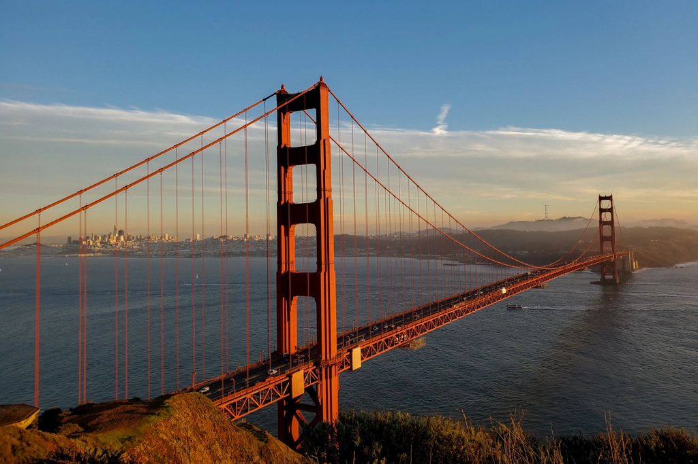
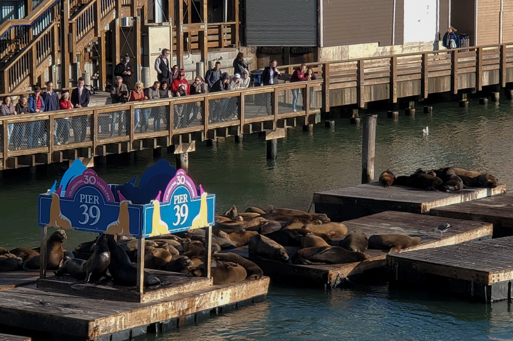
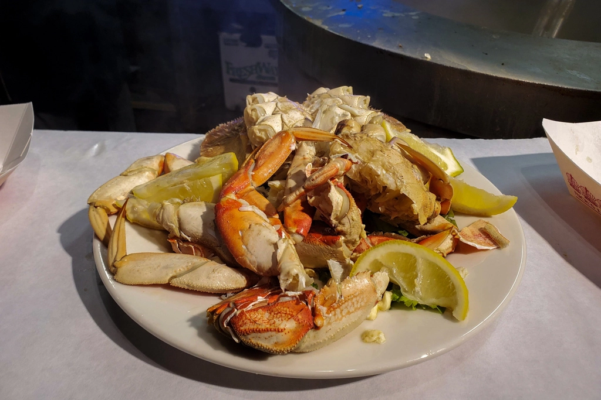
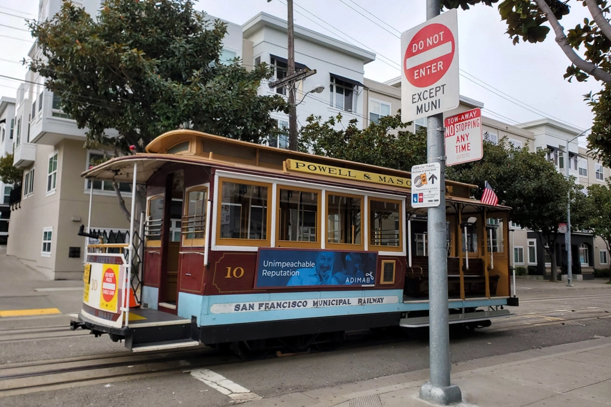
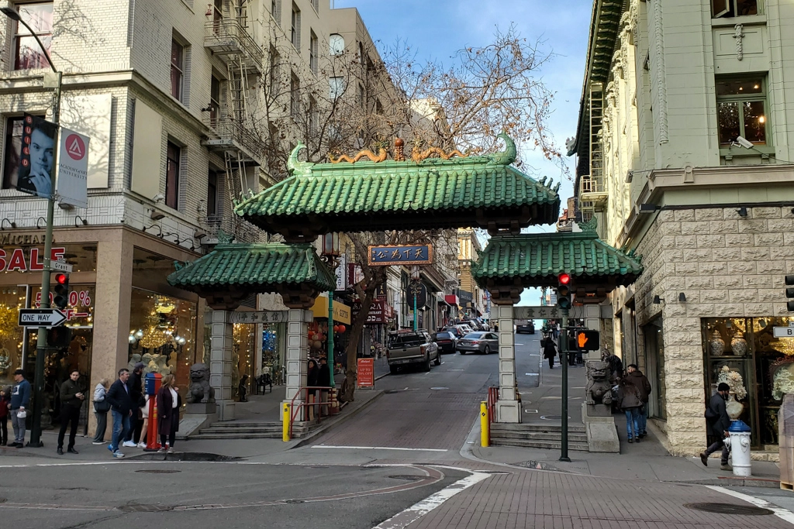
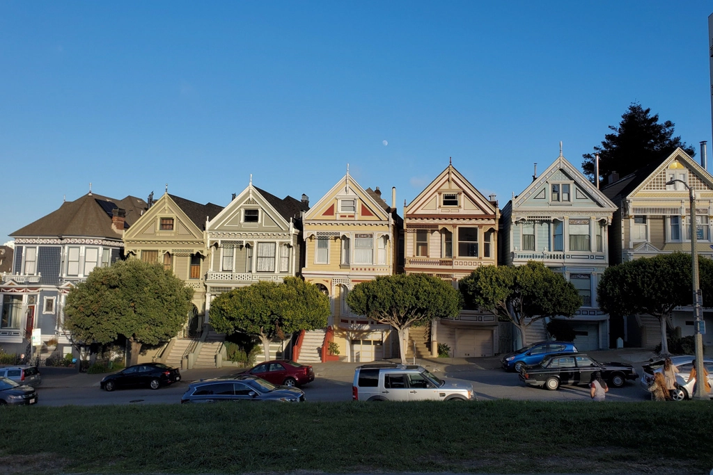
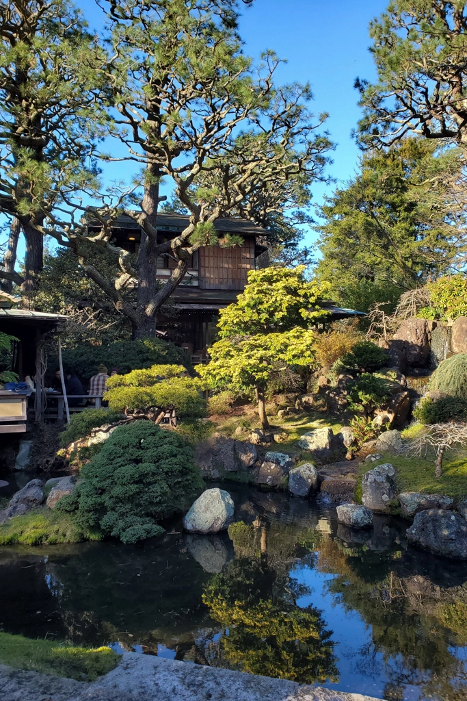
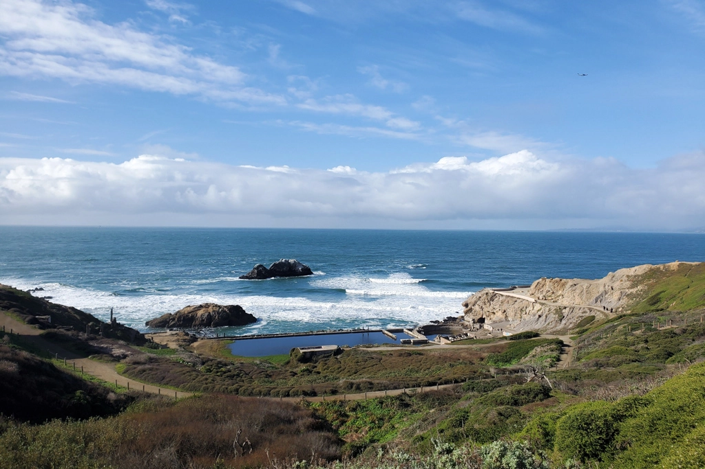
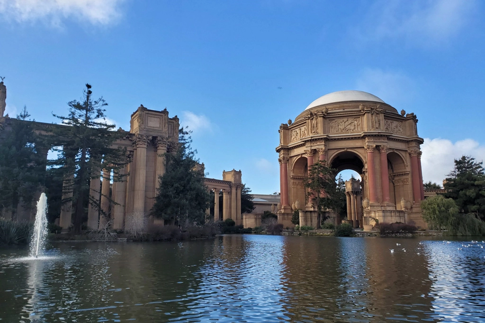

San Francisco
Apr 18 - Written by Bonnie

With the new incoming warm weather, where better to explore and enjoy the sunny weather than the great Bay area in the US, the city of San Francisco.
With plenty of architecture, landmarks, and food spots to explore, you’ll never run out of things to do - especially if you happen to be following the suggestions and tips we have for you here! Since San Francisco is such a diverse city with so many different activities and sights to see, there is a variety of neighborhoods you can check out depending on your interests. I’ve provided a Google Map (at the bottom of this post) with all the different food spots and travel sights that you can visit all across the city! Now to dive a little bit deeper into the different things you can explore, I’ll be breaking down all the sites and food spots to try into each different area in the city. This can also help you figure out which areas you want to visit the most and be able to book your accommodations and transportation accordingly!
Now of course I had to start off with one of the most infamous areas in the city, Fisherman’s Wharf! It is definitely one of the most tourist centric spots in San Francisco. There are a lot of different things you can do in this area as its boardwalk spans across multiple piers that each have their own unique restaurants and sights to see.
If you’ve looked up San Francisco’s Fisherman’s Wharf, I’m sure you’ve seen one of my most favorite activities, seal watching! Pier 39 is where you can find all the souvenir shops and chain restaurants that you may want to try out in the city. But most importantly, it’s the spot where you can get a clear view of the dozens of seals sunbathing on the wooden planks that float in the water. Pier 39 is also one of the primary places where you can participate in different cruises or tours within the city. This is one of the most convenient areas to easily buy your ticket for a quick cruise around the bay to see the different parts of the city from the water and even sail below the Golden Gate Bridge!
When you’re visiting Fisherman’s Wharf, I suggest buying your cruise tickets in advance before taking a stroll through all the shops since the boarding area for the city cruise is right next to Pier 39!
I’ve talked about all the popular spots in this area, but there are a few gems that I happened to stumble upon during my visits. In the next Pier over, you will find one of the most vintage and fun museums, Musee Mecanique. One of the only museums of arcade games and artifacts that has a huge collection of games and machines that you and your friends and family can spend the whole day playing! And right next to the museum, you’ll see the USS Pampanito, a US navy ship!
Now, after a full day of shopping and games, make your way to Fisherman’s Wharf where you will be able to try some of San Francisco’s famous fresh seafood. A row of seafood restaurants and stalls line the street for you to try, from a large variety of crab, lobster, and many more all cooked in various methods. This was definitely a highlight of all the food spots as you can watch the chefs instantly make your order to ensure that all the seafood that makes its way to your table is as fresh as can be! I recommend trying out the crab and lobster rolls at any or all of the stands!
Speaking of food, there’s another food spot in this area that I have to recommend that you check out, Boudin! Their famous sourdough will keep you coming back for more, especially when it's served as a bread bowl filled with delicious warm clam chowder - what can be better?! If you get the chance to check out Boudin, definitely make sure to watch their bread making process as you see the bakers make fresh dough through their full-length glass windows! They even have a gift shop and bakery next to their restaurant where you can take a delicious loaf home to eat (or to your accommodation for a delicious midnight snack!)
Fisherman’s Wharf is definitely a neighborhood filled with food, shopping, and activities that can keep you and your friends and family occupied for the day! Be sure to include these activities and food spots in your itinerary so you don’t miss the beautiful water view along the boardwalk and the great souvenirs to bring home!
Now, if you’ve made your way to the furthest end of Fisherman’s Wharf, where can try the infamous west coast burger, In n Out, you are at the perfect spot to buy a ticket for the cable car! Their main stop on Hyde/Beach Street is the perfect route that takes you through the city. You’ll be able to take a glance at the famous Lombard Street before making your way to the Lower Nob Hill area comprised of neighborhoods such as Chinatown, Union Square, and the Financial District.
San Francisco’s large population of Chinese individuals fill the large Chinatown neighborhood with plenty of delicious bakeries, restaurants, and tea shops. This is another spot in the city to explore shops and food spots, especially to try out the dragon beard candy!
If Fisherman’s Wharf wasn’t enough shopping for you, you can also head to Union Square, which is within walking distance, to spend some time in their underground shopping malls and enjoy a nice walk in the park area. To wrap up your day, you can take another short walk down to the Financial District to enjoy the large variety of food shops, restaurants, and dessert places at the Ferry Building. Not only would you get a chance to enjoy the nice ocean breeze but you also get to enjoy delicious food while you admire the water view! After your meal, you can hang out in the square in front of the Ferry Building while trying one of the yummiest ice cream spots in the city, Humphry Slocombe!
Now of course we can’t talk about Chinatown without mentioning another hot neighborhood spot filled with delicious Asian food spots, Japantown! The streets are filled with popular Asian cuisines but most of all, Japanese and Korean restaurants that can fulfill any craving you may have! In Japantown you will find a large mall filled with all types of Japanese stores for everything from books and knick knacks to beauty and food. It’s your one stop shop for all things Japanese!
What’s perfect is that after enjoying a delicious Japanese meal, you can head to the nearby sight to check out the famous Painted Ladies that was featured in the popular TV show, Full House. Located next to a large park is the perfect spot for you to enjoy the sun and take a quick break from an action-packed travel itinerary!

But of course, I had to save the best park to visit for last! As we move further west of the city, you will find the beautiful Golden Gate Park that span across 1000 acres. Here you can spend the day checking out the beautiful Japanese tea garden where you can enjoy the architecture and sip on some delicious hot tea before making your way to one of my favorite sections in the park, the Bison Paddock. Here you’ll be able to see the bison up close. As you make your way to the end of the park, end your visit with a beautiful view of the windmills before making your way to the beach to enjoy some more ocean views.
If you’re still looking for something more active, the famous Lands End hike trail is situated close by. Of course, you have to fuel your body before going on a hike. The restaurant Cassava is located nearby, famous for its Japanese brunch menu, it was one of my favorite meals on this trip! Now after a hearty meal, one of my favorite trails during my trip to San Francisco, Lands End is a great hike for children and family of all ages that provide a great view of the Golden Gate bridge. At the beginning of the trail, you can even take a look at the remains of the Sutro Baths before starting on your hike. Make sure to pack plenty of water and some snacks for the road because there is definitely plenty of breaks on the trail for you to enjoy the view!
Now of course, saving the very best for last - The Golden Gate Bridge. Home of one of the most famous architectural structures, you definitely can’t skip this tourist attraction during your visit to San Francisco! In the Presidio area, you can find one of the prime spots to see the Golden Gate Bridge and take plenty of photos from the Golden Gate Bridge Vista Point! Apart from the Golden Gate Bridge there are a few other spots to visit in the area including the beautiful Palace of Fine Arts, filled with beautiful architecture and a glistening lake view is a perfect spot to enjoy a lovely afternoon admiring the architecture and park. And to end your trip, one of my favorite museums that I visited during my time in San Francisco, the Walt Disney Museum. There you will be able to view the history and development of some of the most famous characters from Disney and of course beat the heat with some indoor activity!
There are so many neighborhoods, sites, and food spots to see in San Francisco so definitely make sure to pick out some of your favorites to go see! And of course, make sure to take a look at the Google Maps I’ve shared here for some more food spots and sights that I didn’t talk about here. There are definitely such a large variety of great selections that I couldn’t fit them all into one blog post!